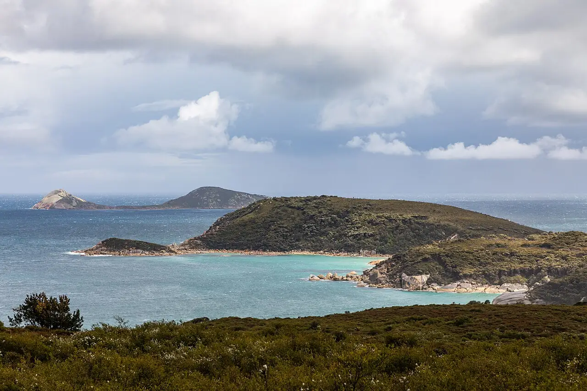

Squeaky Beach
Wilsons Promontory, Victoria, Australie · baignade

Plage de sable quartzeux très fin qui crisse sous les pieds, encadrée de gros blocs de granit orangé, dans le parc national de Wilsons Promontory. L’eau est claire mais fraîche.
- Lieu
- Wilsons Promontory, Victoria, Australie
- Niveau
- Intermédiaire
- Activités
- baignade
- Type d'eau
- Mer / océan
- Coordonnées
- -39.02, 146.31 (position approximative du secteur)
Dangers à connaître
- Courants d’arrachement quand la houle rentre, plage non surveillée.
- Eau froide, même en été.
Le conseil d'Ocean Buddy
Pour une baignade surveillée l’été, rejoins plutôt Norman Beach à Tidal River, juste à côté.
Ouvrir dans Ocean Buddy Télécharger sur l'App Store
Source : Fiche Ocean Buddy · septembre 2026 · à vérifier localement.